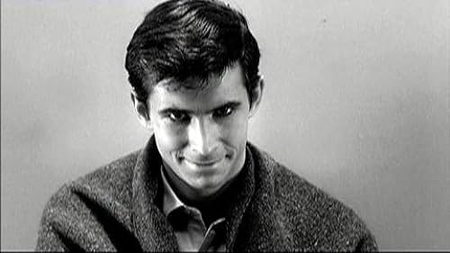

Trivia de Películas de Terror
¿Cuál de las siguientes películas fue dirigida por Alfred Hitchcock?
Esta película es conocida por su famosa escena de la ducha.
Tiempo restante: 30 segundos
¿Quién posee a la chica del exorcista?

¿Qué película de 1976 se considera una de las primeras películas importantes del subgénero?

¿Qué película a continuación presentaba a una mujer poseída cubierta de misteriosos cortes y símbolos autoinfligidos?

En la película de 1981 The Evil Dead, ¿qué se utiliza para convocar demonios al bosque?

¿Cuál de estas películas presentó posiblemente una de las escenas de posesión más largas y aterradoras?

¿Qué película presenta a un niño demonio?

¿Cómo se llama el muñeco poseído por un demonio en la franquicia El Conjuro?

¿Qué película presenta a Russel Crowe como padre y exorcista principal?

De todas estas películas, ¿cuál no está relacionada con la posesión demoníaca?

En la película Insidious, ¿cómo se llama el demonio que posee a Dalton Lambert?